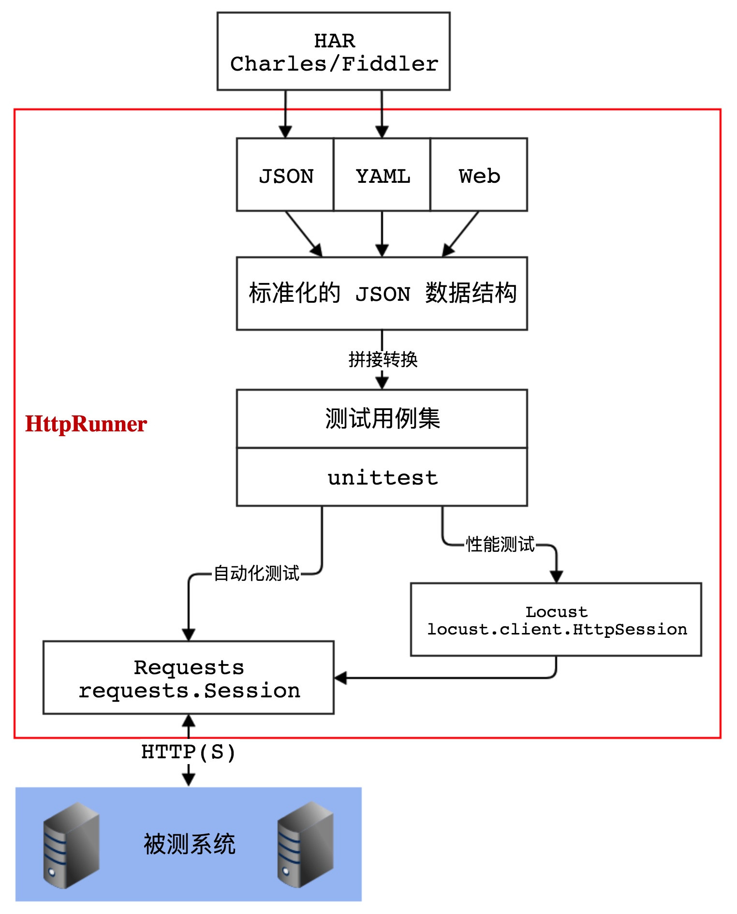
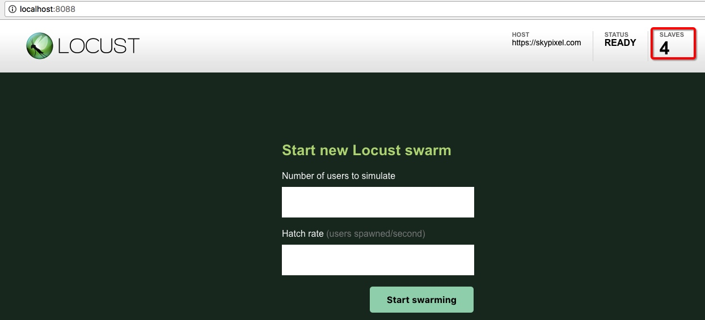

性能测试
HttpRunner 通过复用 Locust，可以在无需对 YAML/JSON 进行任何修改的情况下，直接运行性能测试。
原理图¶

安装依赖包¶
安装完成 HttpRunner 后，系统中会新增locusts命令，但不会同时安装 Locust。
在系统中未安装 Locust 的情况下，运行locusts命令时会出现如下提示。
$ locusts -V
WARNING Locust is not installed, install first and try again.
install command: pip install locustio
Locust 的安装方式如下：
$ pip install locustio
安装完成后，执行 locusts -V 可查看到 Locust 的版本号。
$ locusts -V
[2017-08-26 23:45:42,246] bogon/INFO/stdout: Locust 0.8a2
[2017-08-26 23:45:42,246] bogon/INFO/stdout:
执行 locusts -h，可查看到使用帮助文档。
$ locusts -h
Usage: locust [options] [LocustClass [LocustClass2 ... ]]
Options:
-h, --help show this help message and exit
-H HOST, --host=HOST Host to load test in the following format:
http://10.21.32.33
--web-host=WEB_HOST Host to bind the web interface to. Defaults to '' (all
interfaces)
-P PORT, --port=PORT, --web-port=PORT
Port on which to run web host
-f LOCUSTFILE, --locustfile=LOCUSTFILE
Python module file to import, e.g. '../other.py'.
Default: locustfile
--csv=CSVFILEBASE, --csv-base-name=CSVFILEBASE
Store current request stats to files in CSV format.
--master Set locust to run in distributed mode with this
process as master
--slave Set locust to run in distributed mode with this
process as slave
--master-host=MASTER_HOST
Host or IP address of locust master for distributed
load testing. Only used when running with --slave.
Defaults to 127.0.0.1.
--master-port=MASTER_PORT
The port to connect to that is used by the locust
master for distributed load testing. Only used when
running with --slave. Defaults to 5557. Note that
slaves will also connect to the master node on this
port + 1.
--master-bind-host=MASTER_BIND_HOST
Interfaces (hostname, ip) that locust master should
bind to. Only used when running with --master.
Defaults to * (all available interfaces).
--master-bind-port=MASTER_BIND_PORT
Port that locust master should bind to. Only used when
running with --master. Defaults to 5557. Note that
Locust will also use this port + 1, so by default the
master node will bind to 5557 and 5558.
--expect-slaves=EXPECT_SLAVES
How many slaves master should expect to connect before
starting the test (only when --no-web used).
--no-web Disable the web interface, and instead start running
the test immediately. Requires -c and -r to be
specified.
-c NUM_CLIENTS, --clients=NUM_CLIENTS
Number of concurrent clients. Only used together with
--no-web
-r HATCH_RATE, --hatch-rate=HATCH_RATE
The rate per second in which clients are spawned. Only
used together with --no-web
-n NUM_REQUESTS, --num-request=NUM_REQUESTS
Number of requests to perform. Only used together with
--no-web
-L LOGLEVEL, --loglevel=LOGLEVEL
Choose between DEBUG/INFO/WARNING/ERROR/CRITICAL.
Default is INFO.
--logfile=LOGFILE Path to log file. If not set, log will go to
stdout/stderr
--print-stats Print stats in the console
--only-summary Only print the summary stats
--no-reset-stats Do not reset statistics once hatching has been
completed
-l, --list Show list of possible locust classes and exit
--show-task-ratio print table of the locust classes' task execution
ratio
--show-task-ratio-json
print json data of the locust classes' task execution
ratio
-V, --version show program's version number and exit
可以看出，loucsts 命令与 locust 命令的用法基本相同。
相比于 locust 命令，loucsts命令主要存在如下两项差异。
运行性能测试¶
在 -f 参数后面，loucsts 命令不仅可以指定 Locust 支持的 Python 文件，同时可以直接指定 YAML/JSON 格式的测试用例文件。在具体实现上，当 -f 指定 YAML/JSON 格式的测试用例文件时，会先将其转换为 Python 格式的 locustfile，然后再将 locustfile.py 传给 locust 命令。
$ locusts -f examples/first-testcase.yml
[2017-08-18 17:20:43,915] Leos-MacBook-Air.local/INFO/locust.main: Starting web monitor at *:8089
[2017-08-18 17:20:43,918] Leos-MacBook-Air.local/INFO/locust.main: Starting Locust 0.8a2
执行上述命令后，即完成了 Locust 服务的启动，后续就可以在 Locust 的 Web 管理界面中进行操作了，使用方式与 Locust 完全相同。
多进程运行模式¶
默认情况下，在 Locust 中如需使用 master-slave 模式启动多个进程（使用多核处理器的能力），只能先启动 master，然后再逐一启动若干个 slave。
$ locust -f locustfile.py --master
$ locust -f locustfile.py --slave &
$ locust -f locustfile.py --slave &
$ locust -f locustfile.py --slave &
$ locust -f locustfile.py --slave &
在 HttpRunner 中，新增实现 --processes 参数，可以一次性启动 1 个 master 和多个 salve。若在 --processes 参数后没有指定具体的数值，则启动的 slave 个数与机器的 CPU 核数相同。
$ locusts -f examples/first-testcase.yml --processes 4
[2017-08-26 23:51:47,071] bogon/INFO/locust.main: Starting web monitor at *:8089
[2017-08-26 23:51:47,075] bogon/INFO/locust.main: Starting Locust 0.8a2
[2017-08-26 23:51:47,078] bogon/INFO/locust.main: Starting Locust 0.8a2
[2017-08-26 23:51:47,080] bogon/INFO/locust.main: Starting Locust 0.8a2
[2017-08-26 23:51:47,083] bogon/INFO/locust.main: Starting Locust 0.8a2
[2017-08-26 23:51:47,084] bogon/INFO/locust.runners: Client 'bogon_656e0af8e968a8533d379dd252422ad3' reported as ready. Currently 1 clients ready to swarm.
[2017-08-26 23:51:47,085] bogon/INFO/locust.runners: Client 'bogon_09f73850252ee4ec739ed77d3c4c6dba' reported as ready. Currently 2 clients ready to swarm.
[2017-08-26 23:51:47,084] bogon/INFO/locust.main: Starting Locust 0.8a2
[2017-08-26 23:51:47,085] bogon/INFO/locust.runners: Client 'bogon_869f7ed671b1a9952b56610f01e2006f' reported as ready. Currently 3 clients ready to swarm.
[2017-08-26 23:51:47,085] bogon/INFO/locust.runners: Client 'bogon_80a804cda36b80fac17b57fd2d5e7cdb' reported as ready. Currently 4 clients ready to swarm.

Enjoy!